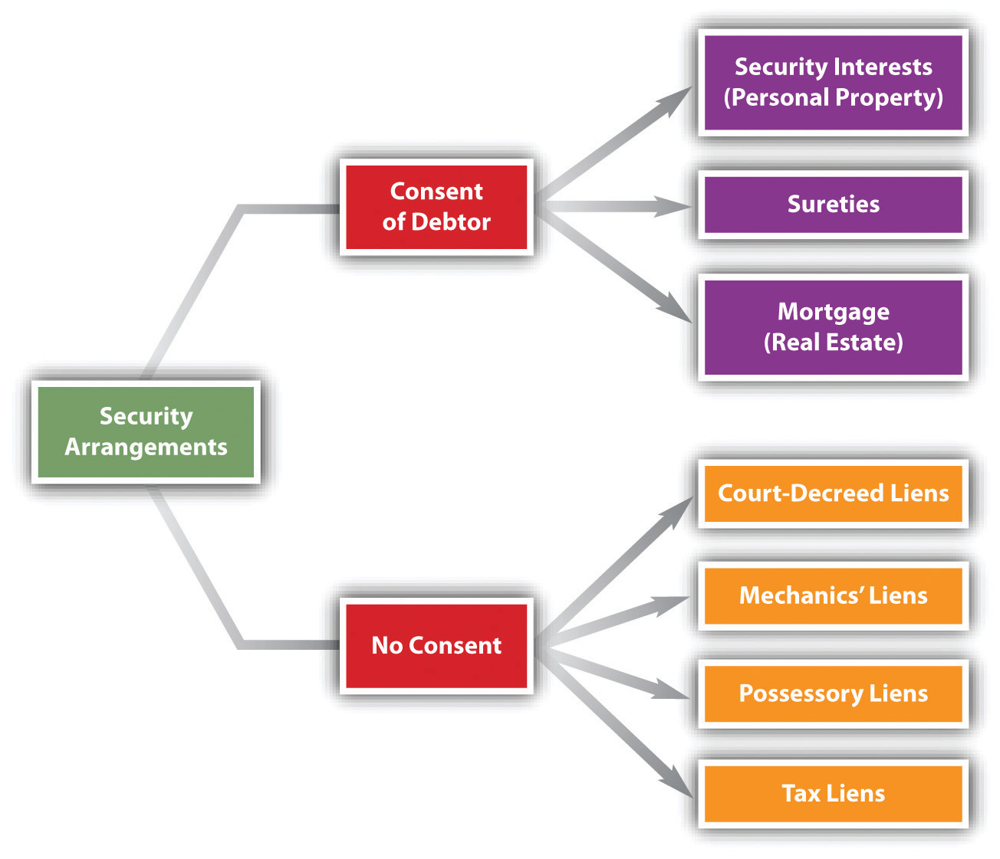
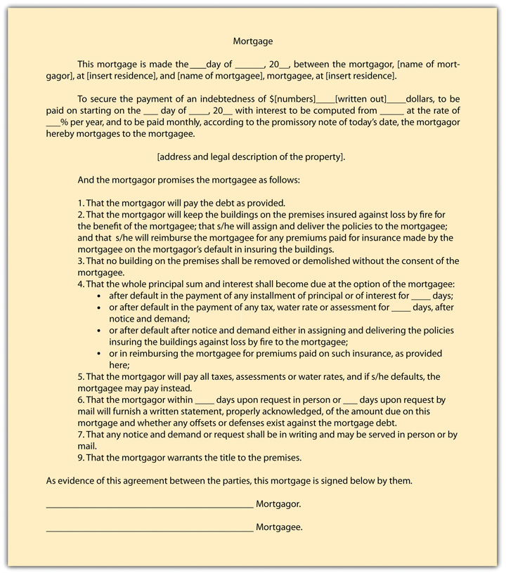
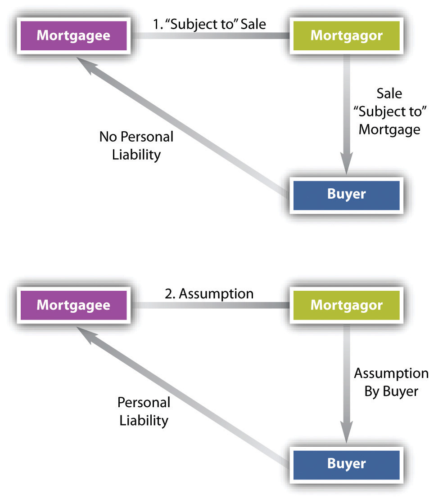
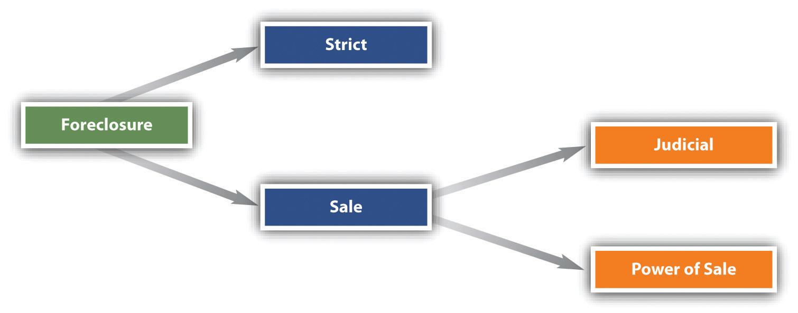

After reading this chapter, you should understand the following:
Having discussed in Chapter 33 "Secured Transactions and Suretyship" security interests in personal property and suretyship—two of the three common types of consensual security arrangements—we turn now to the third type of consensual security arrangement, the mortgage. We also discuss briefly various forms of nonconsensual liens (see Figure 34.1 "Security Arrangements").
Figure 34.1 Security Arrangements
A mortgageSecurity in which collateral is land. is a means of securing a debt with real estate. A long time ago, the mortgage was considered an actual transfer of title, to become void if the debt was paid off. The modern view, held in most states, is that the mortgage is but a lien, giving the holder, in the event of default, the right to sell the property and repay the debt from the proceeds. The person giving the mortgage is the mortgagorOne who gives a mortgage; the debtor., or borrower. In the typical home purchase, that’s the buyer. The buyer needs to borrow to finance the purchase; in exchange for the money with which to pay the seller, the buyer “takes out a mortgage” with, say, a bank. The lender is the mortgageeThe party who holds a mortgage; the creditor (such as a bank)., the person or institution holding the mortgage, with the right to foreclose on the property if the debt is not timely paid. Although the law of real estate mortgages is different from the set of rules in Article 9 of the Uniform Commercial Code (UCC) that we examined in Chapter 33 "Secured Transactions and Suretyship", the circumstances are the same, except that the security is real estate rather than personal property (secured transactions) or the promise of another (suretyship).
Most frequently, we think of a mortgage as a device to fund a real estate purchase: for a homeowner to buy her house, or for a commercial entity to buy real estate (e.g., an office building), or for a person to purchase farmland. But the value in real estate can be mortgaged for almost any purpose (a home equity loan): a person can take out a mortgage on land to fund a vacation. Indeed, during the period leading up to the recession in 2007–08, a lot of people borrowed money on their houses to buy things: boats, new cars, furniture, and so on. Unfortunately, it turned out that some of the real estate used as collateral was overvalued: when the economy weakened and people lost income or their jobs, they couldn’t make the mortgage payments. And, to make things worse, the value of the real estate sometimes sank too, so that the debtors owed more on the property than it was worth (that’s called being underwater). They couldn’t sell without taking a loss, and they couldn’t make the payments. Some debtors just walked away, leaving the banks with a large number of houses, commercial buildings, and even shopping centers on their hands.
The mortgage has ancient roots, but the form we know evolved from the English land law in the Middle Ages. Understanding that law helps to understand modern mortgage law. In the fourteenth century, the mortgage was a deed that actually transferred title to the mortgagee. If desired, the mortgagee could move into the house, occupy the property, or rent it out. But because the mortgage obligated him to apply to the mortgage debt whatever rents he collected, he seldom ousted the mortgagor. Moreover, the mortgage set a specific date (the “law day”) on which the debt was to be repaid. If the mortgagor did so, the mortgage became void and the mortgagor was entitled to recover the property. If the mortgagor failed to pay the debt, the property automatically vested in the mortgagee. No further proceedings were necessary.
This law was severe. A day’s delay in paying the debt, for any reason, forfeited the land, and the courts strictly enforced the mortgage. The only possible relief was a petition to the king, who over time referred these and other kinds of petitions to the courts of equity. At first fitfully, and then as a matter of course (by the seventeenth century), the equity courts would order the mortgagee to return the land when the mortgagor stood ready to pay the debt plus interest. Thus a new right developed: the equitable right of redemption, known for short as the equity of redemption. In time, the courts held that this equity of redemption was a form of property right; it could be sold and inherited. This was a powerful right: no matter how many years later, the mortgagor could always recover his land by proffering a sum of money.
Understandably, mortgagees did not warm to this interpretation of the law, because their property rights were rendered insecure. They tried to defeat the equity of redemption by having mortgagors waive and surrender it to the mortgagees, but the courts voided waiver clauses as a violation of public policy. Hence a mortgage, once a transfer of title, became a security for debt. A mortgage as such can never be converted into a deed of title.
The law did not rest there. Mortgagees won a measure of relief in the development of the foreclosureTo shut off the owner’s interest in property and sell it upon default.. On default, the mortgagee would seek a court order giving the mortgagor a fixed time—perhaps six months or a year—within which to pay off the debt; under the court decree, failure meant that the mortgagor was forever foreclosed from asserting his right of redemption. This strict foreclosureThe creditor takes the collateral, discharges the debtor, and has no right to seek any deficiency. gave the mortgagee outright title at the end of the time period.
In the United States today, most jurisdictions follow a somewhat different approach: the mortgagee forecloses by forcing a public sale at auction. Proceeds up to the amount of the debt are the mortgagee’s to keep; surplus is paid over to the mortgagor. Foreclosure by saleTo sell land upon buyer’s default at a public auction. is the usual procedure in the United States. At bottom, its theory is that a mortgage is a lien on land. (Foreclosure issues are further discussed in Section 34.2 "Priority, Termination of the Mortgage, and Other Methods of Using Real Estate as Security".)
Under statutes enacted in many states, the mortgagor has one last chance to recover his property, even after foreclosure. This statutory right of redemptionAfter foreclosure, for a limited period, the debtor’s right to reclaim the property sold, upon paying all costs and fees. extends the period to repay, often by one year.
The decision whether to lend money and take a mortgage is affected by several federal and state regulations.
Statutes dealing with consumer credit transactions (as discussed in Chapter 32 "Consumer Credit Transactions") have a bearing on the mortgage, including state usury statutes, and the federal Truth in Lending Act and Equal Credit Opportunity Act.
Other federal statutes are directed more specifically at mortgage lending. One, enacted in 1974, is the Real Estate Settlement Procedures Act (RESPA), aimed at abuses in the settlement process—the process of obtaining the mortgage and purchasing a residence. The act covers all federally related first mortgage loans secured by residential properties for one to four families. It requires the lender to disclose information about settlement costs in advance of the closing day: it prohibits the lender from “springing” unexpected or hidden costs onto the borrower. The RESPA is a US Department of Housing and Urban Development (HUD) consumer protection statute designed to help home buyers be better shoppers in the home-buying process, and it is enforced by HUD. It also outlaws what had been a common practice of giving and accepting kickbacks and referral fees. The act prohibits lenders from requiring mortgagors to use a particular company to obtain insurance, and it limits add-on fees the lender can demand to cover future insurance and tax charges.
Redlining. Several statutes are directed to the practice of redliningThe alleged practice by lenders not to lend within certain geographic areas; considered discrimination.—the refusal of lenders to make loans on property in low-income neighborhoods or impose stricter mortgage terms when they do make loans there. (The term derives from the supposition that lenders draw red lines on maps around ostensibly marginal neighborhoods.) The most important of these is the Community Reinvestment Act (CRA) of 1977.12 United States Code, Section 2901. The act requires the appropriate federal financial supervisory agencies to encourage regulated financial institutions to meet the credit needs of the local communities in which they are chartered, consistent with safe and sound operation. To enforce the statute, federal regulatory agencies examine banking institutions for CRA compliance and take this information into consideration when approving applications for new bank branches or for mergers or acquisitions. The information is compiled under the authority of the Home Mortgage Disclosure Act of 1975, which requires financial institutions within its purview to report annually by transmitting information from their loan application registers to a federal agency.
The note and the mortgage documents are the contracts that set up the deal: the mortgagor gets credit, and the mortgagee gets the right to repossess the property in case of default.
If the lender decides to grant a mortgage, the mortgagor signs two critical documents at the closing: the note and the mortgage. It is enough here to recall that in a note (really a type of IOU), the mortgagor promises to pay a specified principal sum, plus interest, by a certain date or dates. The note is the underlying obligation for which the mortgage serves as security. Without the note, the mortgagee would have an empty document, since the mortgage would secure nothing. Without a mortgage, a note is still quite valid, evidencing the debtors personal obligation.
One particular provision that usually appears in both mortgages and the underlying notes is the acceleration clauseA contract clause providing that the entire amount owing in debt becomes due if one payment is missed.. This provides that if a debtor should default on any particular payment, the entire principal and interest will become due immediately at the lender’s option. Why an acceleration clause? Without it, the lender would be powerless to foreclose the entire mortgage when the mortgagor defaulted but would have to wait until the expiration of the note’s term. Although the acceleration clause is routine, it will not be enforced unless the mortgagee acts in an equitable and fair manner. The problem arises where the mortgagor’s default was the result of some unconscionable conduct of the mortgagee, such as representing to the mortgagee that she might take a sixty-day “holiday” from having to make payments. In Paul H. Cherry v. Chase Manhattan Mortgage Group (Section 34.4 "Cases"), the equitable powers of the court were invoked to prevent acceleration.
Under the statute of frauds, the mortgage itself must be evidenced by some writing to be enforceable. The mortgagor will usually make certain promises and warranties to the mortgagee and state the amount and terms of the debt and the mortgagor’s duties concerning taxes, insurance, and repairs. A sample mortgage form is presented in Figure 34.2 "Sample Mortgage Form".
Figure 34.2 Sample Mortgage Form
As a mechanism of security, a mortgage is a promise by the debtor (mortgagor) to repay the creditor (mortgagee) for the amount borrowed or credit extended, with real estate put up as security. If the mortgagor doesn’t pay as promised, the mortgagee may repossess the real estate. Mortgage law has ancient roots and brings with it various permutations on the theme that even if the mortgagor defaults, she may nevertheless have the right to get the property back or at least be reimbursed for any value above that necessary to pay the debt and the expenses of foreclosure. Mortgage law is regulated by state and federal statute.
You may recall from Chapter 33 "Secured Transactions and Suretyship" how important it is for a creditor to perfect its secured interest in the goods put up as collateral. Absent perfection, the creditor stands a chance of losing out to another creditor who took its interest in the goods subsequent to the first creditor. The same problem is presented in real property security: the mortgagee wants to make sure it has first claim on the property in case the mortgagor (debtor) defaults.
The general rule of priority is the same for real property security as for personal property security: the first in time to give notice of the secured interest is first in right. For real property, the notice is by recordingThe official filing of a legal document (a mortgage or a deed) so as to inform the world of it. the mortgage. Recording is the act of giving public notice of changes in interests in real estate. Recording was created by statute; it did not exist at common law. The typical recording statute calls for a transfer of title or mortgage to be placed in a particular county office, usually the auditor, recorder, or register of deeds.
A mortgage is valid between the parties whether or not it is recorded, but a mortgagee might lose to a third party—another mortgagee or a good-faith purchaser of the property—unless the mortgage is recorded.
There are exceptions to the general rule; two are taken up here.
The fixture-filing provision in Article 9 of the UCC is one exception to the general rule. As noted in Chapter 33 "Secured Transactions and Suretyship", the UCC gives priority to purchase-money security interests in fixtures if certain requirements are met.
A bank might make advances to the debtor after accepting the mortgage. If the future advances are obligatory, then the first-in-time rule applies. For example: Bank accepts Debtor’s mortgage (and records it) and extends a line of credit on which Debtor draws, up to a certain limit. (Or, as in the construction industry, Bank might make periodic advances to the contractors as work progresses, backed by the mortgage.) Second Creditor loans Debtor money—secured by the same property—before Debtor began to draw against the first line of credit. Bank has priority: by searching the mortgage records, Second Creditor should have been on notice that the first mortgage was intended as security for the entire line of credit, although the line was doled out over time.
However, if the future advances are not obligatory, then priority is determined by notice. For example, a bank might take a mortgage as security for an original loan and for any future loans that the bank chooses to make. A later creditor can achieve priority by notifying the bank with the first mortgage that it is making an advance. Suppose Jimmy mortgages his property to a wealthy dowager, Mrs. Calabash, in return for an immediate loan of $20,000 and they agree that the mortgage will serve as security for future loans to be arranged. The mortgage is recorded. A month later, before Mrs. Calabash loans him any more money, Jimmy gives a second mortgage to Louella in return for a loan of $10,000. Louella notifies Mrs. Calabash that she is loaning Jimmy the money. A month later, Mrs. Calabash loans Jimmy another $20,000. Jimmy then defaults, and the property turns out to be worth only $40,000. Whose claims will be honored and in what order? Mrs. Calabash will collect her original $20,000, because it was recited in the mortgage and the mortgage was recorded. Louella will collect her $10,000 next, because she notified the first mortgage holder of the advance. That leaves Mrs. Calabash in third position to collect what she can of her second advance. Mrs. Calabash could have protected herself by refusing the second loan.
The mortgagor’s liability can terminate in three ways: payment, assumption (with a novation), or foreclosure.
Unless they live in the home for twenty-five or thirty years, the mortgagors usually pay off the mortgage when the property is sold. Occasionally, mortgages are paid off in order to refinance. If the mortgage was taken out at a time of high interest rates and rates later drop, the homeowner might want to obtain a new mortgage at the lower rates. In many mortgages, however, this entails extra closing costs and penalties for prepaying the original mortgage. Whatever the reason, when a mortgage is paid off, the discharge should be recorded. This is accomplished by giving the mortgagor a copy of, and filing a copy of, a Satisfaction of Mortgage document. In the Paul H. Cherry v. Chase Manhattan Mortgage Group case (Section 34.4 "Cases"), the bank mistakenly filed the Satisfaction of Mortgage document, later discovered its mistake, retracted the satisfaction, accelerated the loan because the mortgagor stopped making payments (the bank, seeing no record of an outstanding mortgage, refused to accept payments), and then tried to foreclose on the mortgage, meanwhile having lost the note and mortgage besides.
The property can be sold without paying off the mortgage if the mortgage is assumed by the new buyer, who agrees to pay the seller’s (the original mortgagor’s) debt. This is a novation if, in approving the assumption, the bank releases the old mortgagor and substitutes the buyer as the new debtor.
The buyer need not assume the mortgage. If the buyer purchases the property without agreeing to be personally liable, this is a sale “subject to” the mortgage (see Figure 34.3 "“Subject to” Sales versus Assumption"). In the event of the seller’s subsequent default, the bank can foreclose the mortgage and sell the property that the buyer has purchased, but the buyer is not liable for any deficiency.
Figure 34.3 “Subject to” Sales versus Assumption
What if mortgage rates are high? Can buyers assume an existing low-rate mortgage from the seller rather than be forced to obtain a new mortgage at substantially higher rates? Banks, of course, would prefer not to allow that when interest rates are rising, so they often include in the mortgage a due-on-sale clauseA contract clause requiring the entire mortgage amount be paid to the mortgagee if the property is sold; it prevents any assumption., by which the entire principal and interest become due when the property is sold, thus forcing the purchaser to get financing at the higher rates. The clause is a device for preventing subsequent purchasers from assuming loans with lower-than-market interest rates. Although many state courts at one time refused to enforce the due-on-sale clause, Congress reversed this trend when it enacted the Garn–St. Germain Depository Institutions Act in 1982.12 United States Code, Section 1701-j. The act preempts state laws and upholds the validity of due-on-sale clauses. When interest rates are low, banks have no interest in enforcing such clauses, and there are ways to work around the due-on-sale clause.
The third method of terminating the mortgage is by foreclosure when a mortgagor defaults. Even after default, the mortgagor has the right to exercise his equity of redemption—that is, to redeem the property by paying the principal and interest in full. If he does not, the mortgagee may foreclose the equity of redemption. Although strict foreclosure is used occasionally, in most cases the mortgagee forecloses by one of two types of sale (see Figure 34.4 "Foreclosure").
The first type is judicial saleA court-ordered sale of property by a public official, such as the sheriff.. The mortgagee seeks a court order authorizing the sale to be conducted by a public official, usually the sheriff. The mortgagor is entitled to be notified of the proceeding and to a hearing. The second type of sale is that conducted under a clause called a power of saleA term allowing the mortgagee to sell real estate upon mortgagor’s default without going to court., which many lenders insist be contained in the mortgage. This clause permits the mortgagee to sell the property at public auction without first going to court—although by custom or law, the sale must be advertised, and typically a sheriff or other public official conducts the public sale or auction.
Figure 34.4 Foreclosure
Once the property has been sold, it is deeded to the new purchaser. In about half the states, the mortgagor still has the right to redeem the property by paying up within six months or a year—the statutory redemption period. Thereafter, the mortgagor has no further right to redeem. If the sale proceeds exceed the debt, the mortgagor is entitled to the excess unless he has given second and third mortgages, in which case the junior mortgagees are entitled to recover their claims before the mortgagor. If the proceeds are less than the debt, the mortgagee is entitled to recover the deficiency from the mortgagor. However, some states have statutorily abolished deficiency judgments.
Besides the mortgage, there are other ways to use real estate as security. Here we take up two: the deed of trust and the installment or land contract.
The deed of trustA type of mortgage where title to the property is nominally in a trustee, who sells if the buyer defaults; it provides for a nonjudicial foreclosure. is a device for securing a debt with real property; unlike the mortgage, it requires three parties: the borrower, the trustee, and the lender. Otherwise, it is at base identical to a mortgage. The borrower conveys the land to a third party, the trustee, to hold in trust for the lender until the borrower pays the debt. (The trustee’s interest is really a kind of legal fiction: that person is expected to have no interest in the property.) The primary benefit to the deed of trust is that it simplifies the foreclosure process by containing a provision empowering the trustee to sell the property on default, thus doing away with the need for any court filings. The disinterested third party making sure things are done properly becomes the trustee, not a judge. In thirty states and the District of Columbia—more than half of US jurisdictions—the deed of trust is usually used in lieu of mortgages.The states using the deed of trust system are as follows: Alabama, Alaska, Arkansas, Arizona, California, Colorado, District of Columbia, Georgia, Hawaii, Idaho, Iowa, Michigan, Minnesota, Mississippi, Missouri, Montana, Nevada, New Hampshire, North Carolina, Oklahoma, Oregon, Rhode Island, South Dakota, Tennessee, Texas, Utah, Virginia, Washington, West Virginia, Wisconsin, and Wyoming.
But the deed of trust may have certain disadvantages as well. For example, when the debt has been fully paid, the trustee will not release the deed of trust until she sees that all notes secured by it have been marked canceled. Should the borrower have misplaced the canceled notes or failed to keep good records, he will need to procure a surety bond to protect the trustee in case of a mistake. This can be an expensive procedure. In many jurisdictions, the mortgage holder is prohibited from seeking a deficiency judgment if the holder chooses to sell the property through nonjudicial means.
Alpha Imperial Building, LLC v. Schnitzer Family Investment, LLC, Section 34.4 "Cases", discusses several issues involving deeds of trust.
Under the installment contract or land contractThe buyer makes installment payments on a real estate purchase, the title shifting when all payments are made., the purchaser takes possession and agrees to pay the seller over a period of years. Until the final payment, title belongs to the seller. The contract will specify the type of deed to be conveyed at closing, the terms of payment, the buyer’s duty to pay taxes and insure the premises, and the seller’s right to accelerate on default. The buyer’s particular concern in this type of sale is whether the seller in fact has title. The buyers can protect themselves by requiring proof of title and title insurance when the contract is signed. Moreover, the buyer should record the installment contract to protect against the seller’s attempt to convey title to an innocent third-party purchaser while the contract is in effect.
The benefit to the land contract is that the borrower need not bank-qualify, so the pool of available buyers is larger, and buyers who have inadequate resources at the time of contracting but who have the expectation of a rising income in the future are good candidates for the land contract. Also, the seller gets all the interest paid by the buyer, instead of the bank getting it in the usual mortgage. The obvious disadvantage from the seller’s point is that she will not get a big lump sum immediately: the payments trickle in over years (unless she can sell the contract to a third party, but that would be at a discount).
The general rule on priority in real property security is that the first creditor to record its interest prevails over subsequent creditors. There are some exceptions; the most familiar is that the seller of a fixture on a purchase-money security interest has priority over a previously recorded mortgagee. The mortgage will terminate by payment, assumption by a new buyer (with a novation releasing the old buyer), and foreclosure. In a judicial-sale foreclosure, a court authorizes the property’s sale; in a power-of-sale foreclosure, no court approval is required. In most states, the mortgagor whose property was foreclosed is given some period of time—six months or a year—to redeem the property; otherwise, the sale is done, but the debtor may be liable for the deficiency, if any. The deed of trust avoids any judicial involvement by having the borrower convey the land to a disinterested trustee for the benefit of the lender; the trustee sells it upon default, with the proceeds (after expenses) going to the lender. Another method of real property security is a land contract: title shifts to the buyer only at the end of the term of payments.
The security arrangements discussed so far—security interests, suretyship, mortgages—are all obtained by the creditor with the debtor’s consent. A creditor may obtain certain liens without the debtor’s consent.
Some nonconsensual liens are issued by courts.
An attachment lienA judicial lien imposed to preserve property during litigation. is ordered against a person’s property—real or personal—to prevent him from disposing of it during a lawsuit. To obtain an attachment lien, the plaintiff must show that the defendant likely will dispose of or hide his property; if the court agrees with the plaintiff, she must post a bond and the court will issue a writ of attachment to the sheriff, directing the sheriff to seize the property. Attachments of real property should be recorded. Should the plaintiff win her suit, the court issues a writ of execution, directing the sheriff to sell the property to satisfy the judgment.
A judgment lienA lien imposed to secure payment of a judgment owing. may be issued when a plaintiff wins a judgment in court if an attachment lien has not already been issued. Like the attachment lien, it provides a method by which the defendant’s property may be seized and sold.
The most common nonconsensual lien on real estate is the mechanic’s lienA claim allowed to one who furnishes labor, services, or materials to improve property.. A mechanic’s lien can be obtained by one who furnishes labor, services, or materials to improve real estate: this is statutory, and the statute must be carefully followed. The “mechanic” here is one who works with his or her hands, not specifically one who works on machines. An automobile mechanic could not obtain a mechanic’s lien on a customer’s house to secure payment of work he did on her car. (The lien to which the automobile mechanic is entitled is a “possessory lien” or “artisan’s lien,” considered in Section 34.3.3 "Possessory Lien") To qualify for a mechanic’s lien, the claimant must file a sworn statement describing the work done, the contract made, or the materials furnished that permanently improved the real estate.
A particularly difficult problem crops up when the owner has paid the contractor, who in turn fails to pay his subcontractors. In many states, the subcontractors can file a lien on the owner’s property, thus forcing the owner to pay them (see Figure 34.5 "Subcontractors’ Lien")—and maybe twice. To protect themselves, owners can demand a sworn statement from general contractors listing the subcontractors used on the job, and from them, owners can obtain a waiver of lien rights before paying the general contractor.
Figure 34.5 Subcontractors’ Lien

Anyone claiming a lien against real estate must record a lien statement stating the amount due and the nature of the improvement. The lienor has a specified period of time (e.g., ninety days) to file from the time the work is finished. Recording as such does not give the lienor an automatic right to the property if the debt remains unpaid. All states specify a limited period of time, usually one year, within which the claimant must file suit to enforce the lien. Only if the court decides the lien is valid may the property be sold to satisfy the debt. Difficult questions sometimes arise when a lien is filed against a landlord’s property as a result of improvements and services provided to a tenant, as discussed in F & D Elec. Contractors, Inc. v. Powder Coaters, Inc., Section 34.4 "Cases".
A mechanic’s lien represents a special risk to the purchaser of real estate or to lenders who wish to take a mortgage. In most states, the mechanic’s lien is given priority not from the date when the lien is recorded but from an earlier date—either the date the contractor was hired or the date construction began. Thus a purchaser or lender might lose priority to a creditor with a mechanic’s lien who filed after the sale or mortgage. A practical solution to this problem is to hold back part of the funds (purchase price or loan) or place them in escrow until the period for recording liens has expired.
The most common nonconsensual lien on personal property (not real estate) is the possessory lienLien imposed by one who has possession of goods to secure payment for improvements to them.. This is the right to continue to keep the goods on which work has been performed or for which materials have been supplied until the owner pays for the labor or materials. The possessory lien arises both under common law and under a variety of statutes. Because it is nonconsensual, the possessory lien is not covered by Article 9 of the UCC, which is restricted to consensual security interests. Nor is it governed by the law of mechanic’s liens, which are nonpossessory and relate only to work done to improve real property.
The common-law rule is that anyone who, under an express or implied contract, adds value to another’s chattel (personal property) by labor, skill, or materials has a possessory lien for the value of the services. Moreover, the lienholder may keep the chattel until her services are paid. For example, the dry cleaner shop is not going to release the wool jacket that you took in for cleaning unless you make satisfactory arrangements to pay for it, and the chain saw store won’t let you take the chain saw that you brought in for a tune-up until you pay for the labor and materials for the tune-up.
An important statutory lien is the federal tax lienA lien imposed by the government to secure payment of taxes owing.. Once the government assesses a tax, the amount due constitutes a lien on the owner’s property, whether real or personal. Until it is filed in the appropriate state office, others take priority, including purchasers, mechanics’ lienors, judgment lien creditors, and holders of security interests. But once filed, the tax lien takes priority over all subsequently arising liens. Federal law exempts some property from the tax lien; for example, unemployment benefits, books and tools of a trade, workers’ compensation, judgments for support of minor children, minimum amounts of wages and salary, personal effects, furniture, fuel, and provisions are exempt.
Local governments also can assess liens against real estate for failure to pay real estate taxes. After some period of time, the real estate may be sold to satisfy the tax amounts owing.
There are four types of nonconsensual liens: (1) court-decreed liens are attachment liens, which prevent a person from disposing of assets pending a lawsuit, and judgment liens, which allow the prevailing party in a lawsuit to take property belonging to the debtor to satisfy the judgment; (2) mechanics’ liens are authorized by statute, giving a person who has provided labor or material to a landowner the right to sell the property to get paid; (3) possessory liens on personal property allow one in possession of goods to keep them to satisfy a claim for work done or storage of them; and (4) tax liens are enforced by the government to satisfy outstanding tax liabilities and may be assessed against real or personal property.
Paul H. Cherry v. Chase Manhattan Mortgage Group
190 F.Supp.2d 1330 (Fed. Dist. Ct. FL 2002)
Background
[Paul Cherry filed a complaint suing Chase for Fair Debt Collection Practices Act violations and slander of credit.]…Chase counter-claimed for foreclosure and reestablishment of the lost note.…
…Chase held a mortgage on Cherry’s home to which Cherry made timely payments until August 2000. Cherry stopped making payments on the mortgage after he received a letter from Chase acknowledging his satisfaction of the mortgage. Cherry notified Chase of the error through a customer service representative. Cherry, however, received a check dated August 15, 2000, as an escrow refund on the mortgage. Chase subsequently recorded a Satisfaction of Mortgage into the Pinellas County public records on October 19, 2000. On November 14, 2000, Chase sent Cherry a “Loan Reactivation” letter with a new loan number upon which to make the payments. During this time, Cherry was placing his mortgage payments into a bank account, which subsequently were put into an escrow account maintained by his attorney. These payments were not, and have not, been tendered to Chase. As a result of the failure to tender, Chase sent Cherry an acceleration warning on November 17, 2000, and again on March 16, 2001. Chase notified the credit bureaus as to Cherry’s default status and moved for foreclosure. In a letter addressed to Cherry’s attorney, dated April 24, 2001, Chase’s attorney advised Cherry to make the mortgage payments to Chase. Chase recorded a “vacatur, revocation, and cancellation of satisfaction of mortgage” (vacatur) [vacatur: an announcement filed in court that something is cancelled or set aside; an annulment] in the Pinellas County public records on May 3, 2001. Chase signed the vacatur on March 21, 2001, and had it notarized on March 27, 2001. Chase has also been unable to locate the original note, dated October 15, 1997, and deems it to be lost.…
Foreclosure
Chase accelerated Cherry’s mortgage debt after determining he was in a default status under the mortgage provisions. Chase claims that the right to foreclose under the note and mortgage is “absolute,” [Citation], and that this Court should enforce the security interest in the mortgage though Chase made an administrative error in entering a Satisfaction of Mortgage into the public records.…
Mortgage
…Chase relies on the Florida Supreme Court decision in United Service Corp. v. Vi-An Const. Corp., [Citation] (Fla.1955), which held that a Satisfaction of Mortgage “made through a mistake may be canceled” and a mortgage reestablished as long as no other innocent third parties have “acquired an interest in the property.” Generally the court looks to the rights of any innocent third parties, and if none exist, equity will grant relief to a mortgagee who has mistakenly satisfied a mortgage before fully paid. [Citation]. Both parties agree that the mortgage was released before the debt was fully paid. Neither party has presented any facts to this Court that implies the possibility nor existence of a third party interest. Although Cherry argues under Biggs v. Smith, 184 So. 106, 107 (1938), that a recorded satisfaction of mortgage is “prima facie evidence of extinguishment of a mortgage lien,” Biggs does not apply this standard to mortgage rights affected by a mistake in the satisfaction.
Therefore, on these facts, this Court acknowledges that a vacatur is a proper remedy for Chase to correct its unilateral mistake since “equity will grant relief to those who have through mistake released a mortgage.” [Citation.] Accordingly, this Court holds that an equity action is required to make a vacatur enforceable unless the parties consent to the vacatur or a similar remedy during the mortgage negotiation.…
Tender
Cherry has not made a mortgage payment to Chase since August 2000, but claims to have made these payments into an escrow account, which he claims were paid to the escrow account because Chase recorded a satisfaction of his mortgage and, therefore, no mortgage existed. Cherry also claims that representatives of Chase rejected his initial attempts to make payments because of a lack of a valid loan number. Chase, however, correctly argues that payments made to an escrow account are not a proper tender of payment. Matthews v. Lindsay, [Citation] (1884) (requiring tender to be made to the court). Nor did Cherry make the required mortgage payments to the court as provided by [relevant court rules], allowing for a “deposit with the court all or any part of such sum or thing, whether that party claims all or any part of the sum or thing.” Further, Chase also correctly argues that Cherry’s failure to tender the payments from the escrow account or make deposits with the court is more than just a “technical breach” of the mortgage and note. [Citation.]
Chase may, therefore, recover the entire amount of the mortgage indebtedness, unless the court finds a “limited circumstance” upon which the request may be denied. [Citation.] Although not presented by Chase in its discussion of this case, the Court may refuse foreclosure, notwithstanding that the defendant established a foreclosure action, if the acceleration was unconscionable and the “result would be inequitable and unjust.” This Court will analyze the inequitable result test and the limited circumstances by which the court may deny foreclosure.
First, this Court does not find the mortgage acceleration unconscionable by assuming arguendo [for the purposes of argument] that the mortgage was valid during the period that the Satisfaction of Mortgage was entered into the public records. Chase did not send the first acceleration warning until November 14, 2000, the fourth month of non-payment, followed by the second acceleration letter on March 16, 2001, the eighth month of non-payment. Although Cherry could have argued that a foreclosure action was an “inequitable” and “unjust” result after the Satisfaction of Mortgage was entered on his behalf, the result does not rise to an unconscionable level since Cherry could have properly tendered the mortgage payments to the court.
Second, the following “limited circumstances” will justify a court’s denial of foreclosure: 1) waiver of right to accelerate; 2) mortgagee estopped from asserting foreclosure because mortgagor reasonably assumed the mortgagee would not foreclose; 3) mortgagee failed to perform a condition precedent for acceleration; 4) payment made after default but prior to receiving intent to foreclose; or, 5) where there was intent to make to make timely payment, and it was attempted, or steps taken to accomplish it, but nevertheless the payment was not made due to a misunderstanding or excusable neglect, coupled with some conduct of the mortgagee which in a measure contributed to the failure to pay when due or within the grace period. [Citations.]
Chase fails to address this fifth circumstance in its motion, an apparent obfuscation of the case law before the court. This Court acknowledges that Cherry’s facts do not satisfy the first four limited circumstances. Chase at no time advised Cherry that the acceleration right was being waived; nor is Chase estopped from asserting foreclosure on the mortgage because of the administrative error, and Cherry has not relied on this error to his detriment; and since Chase sent the acceleration letter to Cherry and a request for payment to his attorney, there can be no argument that Cherry believed Chase would not foreclose. Chase has performed all conditions precedent required by the mortgage provisions prior to notice of the acceleration; sending acceleration warnings on November 17, 2000, and March 16, 2001. Cherry also has no argument for lack of notice of intent to accelerate after default since he has not tendered a payment since July 2000, thus placing him in default of the mortgage provisions, and he admits receiving the acceleration notices.
This Court finds, however, that this claim fails squarely into the final limited circumstance regarding intent to make timely payments. Significant factual issues exist as to the intent of Cherry to make or attempt to make timely mortgage payments to Chase. Cherry claims that he attempted to make the payments, but was told by a representative of Chase that there was no mortgage loan number upon which to apply the payments. As a result, the mortgage payments were placed into an account and later into his counsel’s trust account as a mortgage escrow. Although these payments should have, at a minimum, been placed with the court to ensure tender during the resolution of the mortgage dispute, Cherry did take steps to accomplish timely mortgage payments. Although Cherry, through excusable neglect or a misunderstanding as to what his rights were after the Satisfaction of Mortgage was entered, failed to tender the payments, Chase is also not without fault; its conduct in entering a Satisfaction of Mortgage into the Pinellas County public records directly contributed to Cherry’s failure to tender timely payments. Cherry’s attempt at making the mortgage payments, coupled with Chase’s improper satisfaction of mortgage fits squarely within the limited circumstance created to justify a court’s denial of a foreclosure. Equity here requires a balancing between Chase’s right to the security interest encumbered by the mortgage and Cherry’s attempts to make timely payments. As such, these limited circumstances exist to ensure that a foreclosure remains an action in equity. In applying this analysis, this Court finds that equity requires that Chase’s request for foreclosure be denied at this juncture.…
Reestablishment of the Lost Note and Mortgage
Chase also requests, as part of the foreclosure counterclaim, the reestablishment of the note initially associated with the mortgage, as it is unable to produce the original note and provide by affidavit evidence of its loss. Chase has complied with the [necessary statutory] requirements[.]…This Court holds the note to be reestablished and that Chase has the lawful right to enforce the note upon the issuance of this order.
This Court also agrees that Chase may reestablish the mortgage through a vacatur, revocation, and cancellation of satisfaction of mortgage. [Citation] (allowing the Equity Court to reestablish a mortgage that was improperly canceled due to a mistake). However, this Court will deem the vacatur effective as of the date of this order. This Court leaves the status of the vacatur during the disputed period, and specifically since May 3, 2001, to be resolved in subsequent proceedings.…Accordingly, it is:
ORDERED that [Chase cannot foreclose and] the request to reestablish the note and mortgage is hereby granted and effective as of the date of this order. Cherry will tender all previously escrowed mortgage payments to the Court, unless the parties agree otherwise, within ten days of this order and shall henceforth, tender future monthly payments to Chase as set out in the reestablished note and mortgage.
F & D Elec. Contractors, Inc. v. Powder Coaters, Inc.
567 S.E.2d 842 (S.C. 2002)
Factual/ Procedural Background
BG Holding f/k/a Colite Industries, Inc. (“BG Holding”) is a one-third owner of about thirty acres of real estate in West Columbia, South Carolina. A warehouse facility is located on the property. In September 1996, Powder Coaters, Inc. (“Powder Coaters”) agreed to lease a portion of the warehouse to operate its business. Powder Coaters was engaged in the business of electrostatically painting machinery parts and equipment and then placing them in an oven to cure. A signed lease was executed between Powder Coaters and BG Holding. Prior to signing the lease, Powder Coaters negotiated the terms with Mark Taylor, (“Taylor”) who was the property manager for the warehouse facility and an agent of BG Holding.
The warehouse facility did not have a sufficient power supply to support Powder Coaters’ machinery. Therefore, Powder Coaters contracted with F & D Electrical (“F & D”) to perform electrical work which included installing two eight foot strip light fixtures and a two hundred amp load center. Powder Coaters never paid F & D for the services. Powder Coaters was also unable to pay rent to BG Holding and was evicted in February 1997. Powder Coaters is no longer a viable company.
In January 1997, F & D filed a Notice and Certificate of Mechanic’s Lien and Affidavit of Mechanic’s Lien. In February 1997, F & D filed this action against BG Holding foreclosing on its mechanic’s lien pursuant to S.C. [statute].…
A jury trial was held on September 2nd and 3rd, 1998. At the close of F & D’s evidence, and at the close of all evidence, BG Holding made motions for directed verdicts, which were denied. The jury returned a verdict for F & D in the amount of $8,264.00. The court also awarded F & D attorneys’ fees and cost in the amount of $8,264.00, for a total award of $16,528.00.
BG Holding appealed. The Court of Appeals, in a two to one decision, reversed the trial court, holding a directed verdict should have been granted to BG Holding on the grounds BG Holding did not consent to the electrical upgrade, as is required by the Mechanic’s Lien Statute. This Court granted F & D’s petition for certiorari, and the issue before this Court is:
Did the trial court err in denying BG Holding’s motion for directed verdict because the record was devoid of any evidence of owner’s consent to materialman’s performance of work on its property as required by [the S.C. statute]?
F & D argues the majority of the Court of Appeals erred in holding the facts of the case failed to establish that BG Holding consented to the work performed by F & D, as is required by the [South Carolina] Mechanic’s Lien Statute. We agree.…
South Carolina’s Mechanic’s Lien Statute provides:
A person to whom a debt is due for labor performed or furnished or for materials furnished and actually used in the erection, alteration, or repair of a building…by virtue of an agreement with, or by consent of, the owner of the building or structure, or a person having authority from, or rightfully acting for, the owner in procuring or furnishing the labor or materials shall have a lien upon the building or structure and upon the interest of the owner of the building or structure …to secure the payment of the debt due. [emphasis added.]
Both parties in this case concede there was no express “agreement” between F & D and BG Holding. Therefore, the issue in this appeal turns on the meaning of the word “consent” in the statute, as applied in the landlord-tenant context. This is a novel issue in South Carolina.
This Court must decide who must give the consent, who must receive consent, and what type of consent (general, specific, oral, written) must be given in order to satisfy the statute. Finally, the Court must decide whether the evidence in this case shows BG Holding gave the requisite consent.
The Court of Appeals’ opinion in this case contemplates the consent must be between the materialman (lien claimant) and the landlord (owner). “It is only logical…that consent under [the relevant section] must…be between the owner and the entity seeking the lien…” [Citation from Court of Appeals]. As stated previously, applying the Mechanic’s Lien Statute in the landlord-tenant context presents a novel issue. We find the consent required by the statute does not have to be between the landlord/owner and the materialman, as the Court of Appeals’ opinion indicates. A determination that the required consent must come from the owner to the materialman means the materialman can only succeed if he can prove an agreement with the owner. Such an interpretation would render meaningless the language of the statute that provides: “…by virtue of an agreement with, or by consent of the owner.…"
Therefore, it is sufficient for the landlord/owner or his agent to give consent to his tenant. The landlord/owner should be able to delegate to his tenant the responsibility for making the requested improvements. The landlord/owner may not want to have direct involvement with the materialman or sub-contractors, but instead may wish to allow the tenant to handle any improvements or upgrades himself. In addition, the landlord/owner may be located far away and may own many properties, making it impractical for him to have direct involvement with the materialman. We find the landlord/owner or his agent is free to enter into a lease or agreement with a tenant which allows the tenant to direct the modifications to the property which have been specifically consented to by the landlord/owner or his agent.
We hold a landlord/owner or his agent can give his consent to the lessee/tenant, as well as directly to the lien claimant, to make modifications to the leased premises.
This Court has already clearly held the consent required by [the relevant section] is “something more than a mere acquiescence in a state of things already in existence. It implies an agreement to that which, but for the consent, could not exist, and which the party consenting has a right to forbid.” [Citations.] However, our Mechanics Lien Statute has never been applied in the landlord-tenant context where a third party is involved.
Other jurisdictions have addressed this issue. The Court of Appeals cited [a Connecticut case, 1987] in support of its holding. We agree with the Court of Appeals that the Connecticut court’s reasoning is persuasive, especially since Connecticut has a similar mechanics lien statute.…
The Connecticut courts have stated “the consent required from the owner or one acting under the owner’s authority is more than the mere granting of permission for work to be conducted on one’s property; or the mere knowledge that work was being performed on one’s land.” Furthermore, although the Connecticut courts have stated the statute does not require an express contract, the courts have required “consent that indicates an agreement that the owner of…the land shall be, or may be, liable for the materials or labor.”…
The reasoning of [Connecticut and other states that have decided this issue] is persuasive. F & D’s brief appears to argue that mere knowledge by the landowner that the work needed to be done, coupled with the landlord’s general “permission” to perform the work, is enough to establish consent under the statute. Under this interpretation, a landlord who knew a tenant needed to improve, upgrade, or add to the leased premises would be liable to any contractor and/or subcontractor who performed work on his land. Under F & D’s interpretation the landlord would not be required to know the scope, cost, etc. of the work, but would only need to give the tenant general permission to perform upgrades or improvements.
Clearly, if the landlord/owner or his agent gives consent directly to the materialman, a lien can be established. Consent can also be given to the tenant, but the consent needs to be specific. The landlord/owner or his agent must know the scope of the project (for instance, as the lease provided in the instant case, the landlord could approve written plans submitted by the tenant). The consent needs to be more than “mere knowledge” that the tenant will perform work on the property. There must be some kind of express or implied agreement that the landlord may be held liable for the work or material. The landlord/owner or his agent may delegate the project or work to his tenant, but there must be an express or implied agreement about the specific work to be done. A general provision in a lease which allows tenant to make repairs or improvements is not enough.
In the instant case, there is some evidence of consent. However, it does not rise to the level required under the statute.…
Viewing the evidence in the light most favorable to F & D, whether BG Holding gave their consent is a close question. However, we agree with the Court of Appeals, that F & D has not presented enough evidence to show: (1) BG Holding gave anything more than general consent to make improvements (as the lease could be interpreted to allow); or (2) BG Holding had anything more that “mere knowledge” that the work was to be done. Powder Coaters asserted the lease’s addendum evidenced BG Holding’s consent to perform the modifications; however, there is no evidence BG Holding expressly or implicitly agreed that it might be liable for the work. In fact, the lease between Powder Coaters and BG Holding expressly provided Powder Coaters was responsible for any alterations made to the property. Even Powder Coaters acknowledged it was not authorized to bind BG Holding.…Therefore, it is impossible to see how the very general provision requiring Powder Coaters to pay for water, sewer, and gas can be interpreted to authorize Powder Coaters to perform an electrical upgrade. Furthermore, we agree with the Court of Appeals that the mere presence of BG Holding’s agent at the work site is not enough to establish consent.
We hold consent, as required by the Mechanic’s Lien Statute, is something more than mere knowledge work will be or could be done on the property. The landlord/owner must do more than grant the tenant general permission to make repairs or improvements to the leased premises. The landlord/owner or his agent must give either his tenant or the materialman express or implied consent acknowledging he may be held liable for the work.
The Court of Appeals’ opinion is affirmed as modified.
Alpha Imperial Building, LLC v. Schnitzer Family Investment, LLC, II (SFI).
2005 WL 715940, (Wash. Ct. App. 2005)
Applewick, J.
Alpha Imperial LLC challenges the validity of a non-judicial foreclosure sale on multiple grounds. Alpha was the holder of a third deed of trust on the building sold, and contests the location of the sale and the adequacy of the sale price. Alpha also claims that the trustee had a duty to re-open the sale, had a duty to the junior lienholder, chilled the bidding, and had a conflict of interest. We find that the location of the sale was proper, the price was adequate, bidding was not chilled, and that the trustee had no duty to re-open the sale, [and] no duty to the junior lienholder.…We affirm.
Mayur Sheth and another individual formed Alpha Imperial Building, LLC in 1998 for the purpose of investing in commercial real estate. In February 2000 Alpha sold the property at 1406 Fourth Avenue in Seattle (the Property) to Pioneer Northwest, LLC (Pioneer). Pioneer financed this purchase with two loans from [defendant Schnitzer Family Investment, LLC, II (SFI)]. Pioneer also took a third loan from Alpha at the time of the sale for $1.3 million. This loan from Alpha was junior to the two [other] loans[.]
Pioneer defaulted and filed for bankruptcy in 2002.…In October 2002 defendant Blackstone Corporation, an entity created to act as a non-judicial foreclosure trustee, issued a Trustee’s Notice of Sale. Blackstone is wholly owned by defendant Witherspoon, Kelley, Davenport & Toole (Witherspoon). Defendant Michael Currin, a shareholder at Witherspoon, was to conduct the sale on January 10, 2003. Currin and Witherspoon represented SFI and 4th Avenue LLC. Sheth received a copy of the Notice of Sale through his attorney.
On January 10, 2003, Sheth and his son Abhi arrived at the Third Avenue entrance to the King County courthouse between 9:30 and 9:45 a.m. They waited for about ten minutes. They noticed two signs posted above the Third Avenue entrance. One sign said that construction work was occurring at the courthouse and ‘all property auctions by the legal and banking communities will be moved to the 4th Avenue entrance of the King County Administration Building.’ The other sign indicated that the Third Avenue entrance would remain open during construction. Sheth and Abhi asked a courthouse employee about the sign, and were told that all sales were conducted at the Administration Building.
Sheth and Abhi then walked to the Administration Building, and asked around about the sale of the Property. [He was told Michael Currin, one of the shareholders of Blackstone—the trustee—was holding the sale, and was advised] to call Currin’s office in Spokane. Sheth did so, and was told that the sale was at the Third Avenue entrance. Sheth and Abhi went back to the Third Avenue entrance.
In the meantime, Currin had arrived at the Third Avenue entrance between 9:35 and 9:40 a.m. The head of SFI, Danny Schnitzer (Schnitzer), and his son were also present. Currin was surprised to notice that no other foreclosure sales were taking place, but did not ask at the information desk about it. Currin did not see the signs directing auctions to occur at the Administration Building. Currin conducted the auction, Schnitzer made the only bid, for $2.1 million, and the sale was complete. At this time, the debt owed on the first two deeds of trust totaled approximately $4.1 million. Currin then left the courthouse, but when he received a call from his assistant telling him about Sheth, he arranged to meet Sheth back at the Third Avenue entrance. When they met, Sheth told Currin that the sales were conducted at the Administration Building. Currin responded that the sale had already been conducted, and he was not required to go to the Administration Building. Currin told Sheth that the notice indicated the sale was to be at the Third Avenue entrance, and that the sale had been held at the correct location. Sheth did not ask to re-open the bidding.…
Sheth filed the current lawsuit, with Alpha as the sole plaintiff, on February 14, 2003. The lawsuit asked for declaratory relief, restitution, and other damages. The trial court granted the defendants’ summary judgment motion on August 8, 2003. Alpha appeals.
Location of the Sale
Alpha argues that the sale was improper because it was at the Third Avenue entrance, not the Administration Building. Alpha points to a letter from a King County employee stating that auctions are held at the Administration Building. The letter also stated that personnel were instructed to direct bidders and trustees to that location if asked. In addition, Alpha argues that the Third Avenue entrance was not a ‘public’ place, as required by [the statute], since auction sales were forbidden there. We disagree. Alpha has not shown that the Third Avenue entrance was an improper location. The evidence shows that the county had changed its policy as to where auctions would be held and had posted signs to that effect. However, the county did not exclude people from the Third Avenue entrance or prevent auctions from being held there. Street, who frequented sales, stated that auctions were being held in both locations. The sale was held where the Notice of Sale indicated it would be. In addition, Alpha has not introduced any evidence to show that the Third Avenue entrance was not a public place at the time of the sale. The public was free to come and go at that location, and the area was ‘open and available for all to use.’ Alpha relies on Morton v. Resolution Trust (S.D. Miss. 1995) to support its contention that the venue of the sale was improper. [But] Morton is not on point.
Alpha argues that Currin should have re-opened the sale. However, it is undisputed that Sheth did not request that Currin re-open it. The evidence indicates that Currin may have known about Sheth’s interest in bidding prior to the day of the sale, due to a conversation with Sheth’s attorney about Sheth’s desire to protect his interest in the Property. But, this knowledge did not create in Currin any affirmative duty to offer to re-open the sale.
In addition, Alpha cites no Washington authority to support the contention that Currin would have been obligated to re-open the sale if Sheth had asked him to. The decision to continue a sale appears to be fully within the discretion of the trustee: “[t]he trustee may for any cause the trustee deems advantageous, continue the sale.” [Citation.] Alpha’s citation to Peterson v. Kansas City Life Ins. Co., Missouri (1936) to support its contention that Currin should have re-opened the sale is unavailing. In Peterson, the Notice of Sale indicated that the sale would be held at the ‘front’ door of the courthouse. But, the courthouse had four doors, and the customary door for sales was the east door. The sheriff, acting as the trustee, conducted the sale at the east door, and then re-opened the sale at the south door, as there had been some sales at the south door. Alpha contends this shows that Currin should have re-opened the sale when learning of the Administration Building location, akin to what the sheriff did in Peterson. However, Peterson does not indicate that the sheriff had an affirmative duty to re-sell the property at the south door. This case is not on point.
Alpha contends that Currin chilled the bidding on the Property by telling bidders that he expected a full credit sale price and by holding the sale at the courthouse. Chilled bidding can be grounds for setting aside a sale. Country Express Stores, Inc. v. Sims, [Washington Court of Appeals] (1997). The Country Express court explained the two types of chilled bidding:
The first is intentional, occurring where there is collusion for the purpose of holding down the bids. The second consists of inadvertent and unintentional acts by the trustee that have the effect of suppressing the bidding. To establish chilled bidding, the challenger must establish the bidding was actually suppressed, which can sometimes be shown by an inadequate sale price.
We hold that there was no chilling. Alpha has not shown that Currin engaged in intentional chilling. There is no evidence that Currin knew about the signs indicating auctions were occurring at the Administration Building when he prepared the Notice of Sale, such that he intentionally held the sale at a location from which he knew bidders would be absent. Additionally, Currin’s statement to [an interested person who might bid on the property] that a full credit sale price was expected and that the opening bid would be $4.1 million did not constitute intentional chilling. SFI was owed $4.1 million on the Property. SFI could thus bid up to that amount at no cost to itself, as the proceeds would go back to SFI. Currin confirmed that SFI was prepared to make a full-credit bid. [It is common for trustees to] disclose the full-credit bid amount to potential third party bidders, and for investors to lose interest when they learn of the amount of indebtedness on property. It was therefore not a misrepresentation for Currin to state $4.1 million as the opening bid, due to the indebtedness on the Property. Currin’s statements had no chilling effect—they merely informed [interested persons] of the minimum amount necessary to prevail against SFI. Thus, Currin did not intentionally chill the bidding by giving Street that information.
Alpha also argues that the chilled bidding could have been unintended by Currin.… [But the evidence is that] Currin’s actions did not intentionally or unintentionally chill the bidding, and the sale will not be set aside.
Alpha claims that the sale price was ‘greatly inadequate’ and that the sale should thus be set aside. Alpha submitted evidence that the property had an ‘as is’ value of $4.35 million in December 2002, and an estimated 2004 value of $5.2 million. The debt owed to SFI on the property was $4.1 million. SFI bought the property for $2.1 million. These facts do not suggest that the sale must be set aside.
Washington case law suggests that the price the property is sold for must be ‘grossly inadequate’ for a trustee’s sale to be set aside on those grounds alone. In Cox [Citation, 1985], the property was worth between $200,000 and $300,000, and was sold to the beneficiary for $11,873. The Court held that amount to be grossly inadequate In Steward [Citation, 1988] the property had been purchased for approximately $64,000, and then was sold to a third party at a foreclosure sale for $4,870. This court held that $4,870 was not grossly inadequate. In Miebach [Citation] (1984), the Court noted that a sale for less than two percent of the property’s fair market value was grossly inadequate. The Court in Miebach also noted prior cases where the sale had been voided due to grossly inadequate purchase price; the properties in those cases had been sold for less than four percent of the value and less than three percent of the value. In addition, the Restatement indicates that gross inadequacy only exists when the sale price is less than 20 percent of the fair market value—without other defects, sale prices over 20 percent will not be set aside. [Citation.] The Property was sold for between 40 and 48 percent of its value. These facts do not support a grossly inadequate purchase price.
Alpha cites Miebach for the proposition that ‘where the inadequacy of price is great the sale will be set aside with slight indications of fraud or unfairness,’ arguing that such indications existed here. However, the cases cited by the Court in Miebach to support this proposition involved properties sold for less than three and four percent of their value. Alpha has not demonstrated the slightest indication of fraud, nor shown that a property that sold for 40 to 48 percent of its value sold for a greatly inadequate price.
Alpha claims that Currin owed a duty to Alpha, the junior lienholder. Alpha cites no case law for this proposition, and, indeed, there is none—Division Two specifically declined to decide this issue in Country Express [Citation]. Alpha acknowledges the lack of language in RCW 61.24 (the deed of trust statute) regarding fiduciary duties of trustees to junior lienholders. But Alpha argues that since RCW 61.24 requires that the trustee follow certain procedures in conducting the sale, and allows for sales to be restrained by anyone with an interest, a substantive duty from the trustee to a junior lienholder can be inferred.
Alpha’s arguments are unavailing. The procedural requirements in RCW 61.24 do not create implied substantive duties. The structure of the deed of trust sale illustrates that no duty is owed to the junior lienholder. The trustee and the junior lienholder have no relationship with each other. The sale is pursuant to a contract between the grantor, the beneficiary and the trustee. The junior lienholder is not a party to that contract. The case law indicates only that the trustee owes a fiduciary duty to the debtor and beneficiary: “a trustee of a deed of trust is a fiduciary for both the mortgagee and mortgagor and must act impartially between them.” Cox [Citation]. The fact that a sale in accordance with that contract can extinguish the junior lienholder’s interest further shows that the grantor’s and beneficiary’s interest in the deed of trust being foreclosed is adverse to the junior lienholder. We conclude the trustee, while having duties as fiduciary for the grantor and beneficiary, does not have duties to another whose interest is adverse to the grantor or beneficiary. Thus, Alpha’s claim of a special duty to a junior lienholder fails.…
…Defendants claim they are entitled to attorney fees for opposing a frivolous claim, pursuant to [the Washington statute]. An appeal is frivolous ‘if there are no debatable issues upon which reasonable minds might differ and it is so totally devoid of merit that there was no reasonable possibility of reversal.’ [Citation] Alpha has presented several issues not so clearly resolved by case law as to be frivolous, although Alpha’s arguments ultimately fail. Thus, Respondents’ request for attorney fees under [state law] is denied.
Affirmed.
A mortgage is a means of securing a debt with real estate. The mortgagor, or borrower, gives the mortgage. The lender is the mortgagee, who holds the mortgage. On default, the mortgagee may foreclose the mortgage, convening the security interest into title. In many states, the mortgagor has a statutory right of redemption after foreclosure.
Various statutes regulate the mortgage business, including the Truth in Lending Act, the Equal Credit Opportunity Act, the Real Estate Settlement Procedures Act, and the Home Mortgage Disclosure Act, which together prescribe a code of fair practices and require various disclosures to be made before the mortgage is created.
The mortgagor signs both a note and the mortgage at the closing. Without the note, the mortgage would secure nothing. Most notes and mortgages contain an acceleration clause, which calls for the entire principal and interest to be due, at the mortgagee’s option, if the debtor defaults on any payment.
In most states, mortgages must be recorded for the mortgagee to be entitled to priority over third parties who might also claim an interest in the land. The general rule is “First in time, first in right,” although there are exceptions for fixture filings and nonobligatory future advances. Mortgages are terminated by repayment, novation, or foreclosure, either through judicial sale or under a power-of-sale clause.
Real estate may also be used as security under a deed of trust, which permits a trustee to sell the land automatically on default, without recourse to a court of law.
Nonconsensual liens are security interests created by law. These include court-decreed liens, such as attachment liens and judgment liens. Other liens are mechanic’s liens (for labor, services, or materials furnished in connection with someone’s real property), possessory liens (for artisans working with someone else’s personal properly), and tax liens.
Able bought a duplex from Carr, who had borrowed from First Bank for its purchase. Able took title subject to Carr’s mortgage. Able did not make mortgage payments to First Bank; the bank foreclosed and sold the property, leaving a deficiency. Which is correct?
The person or institution holding a mortgage is called
Mortgages are regulated by
At the closing, a mortgagor signs
Mortgages are terminated by
A lien ordered against a person’s property to prevent its disposal during a lawsuit is called